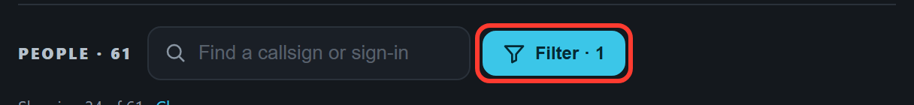
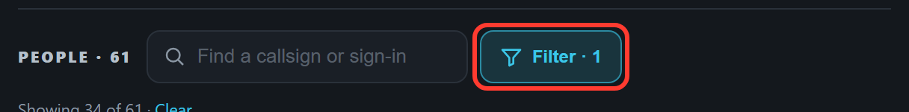
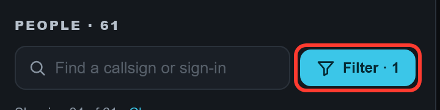
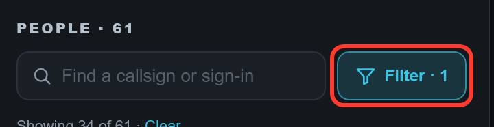
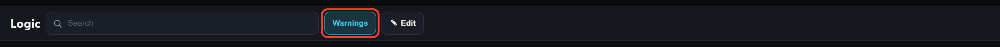
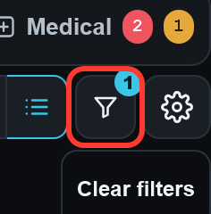
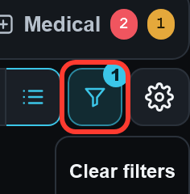

<title>Filter Button Look</title>
<meta name="claude:viewport-fit-sides" content="cover">
<style>
/* The app's own dark greys and cyan; one column of before-and-after pairs on a phone. */
:root {
  color-scheme: dark;
  --bg: #0d1116; --panel: #171c23; --line: #2a313a; --fg: #eef2f6; --soft: #a9b4c0; --accent: #38c6e8; --new: #7ee0a4; --today: #f0a8a0;
  --ui: -apple-system, BlinkMacSystemFont, "Segoe UI", system-ui, sans-serif;
}
* { box-sizing: border-box; }
body { background: var(--bg); color: var(--fg); font: 16px/1.5 var(--ui); }
.wrap { max-width: 860px; margin: 0 auto; display: grid; gap: 34px; padding-block: 24px 52px;
  padding-left: max(16px, env(safe-area-inset-left, 0px)); padding-right: max(16px, env(safe-area-inset-right, 0px)); }
h1 { font-size: 26px; line-height: 1.2; margin: 0; text-wrap: balance; }
h2 { font-size: 20px; line-height: 1.25; margin: 0; text-wrap: balance; }
p { margin: 0; max-width: 65ch; }
.soft { color: var(--soft); }
.now { display: grid; gap: 10px; background: var(--panel); border: 1px solid var(--line); border-radius: 14px; padding: 18px; }
.rec { color: var(--new); font-weight: 600; }
section { display: grid; gap: 14px; }
.pair { display: grid; gap: 14px; grid-template-columns: 1fr; }
@media (min-width: 720px) { .pair { grid-template-columns: 1fr 1fr; align-items: start; } }
figure { margin: 0; display: grid; gap: 6px; min-width: 0; }
figcaption { font-size: 14px; color: var(--soft); }
figcaption b.t { color: var(--today); }
figcaption b.n { color: var(--new); }
figure img { display: block; width: 100%; height: auto; border: 1px solid var(--line); border-radius: 10px; background: #000; }
figure.small img { width: auto; max-width: 100%; }
</style>

<main class="wrap">
  <header class="now">
    <h1>The Filter button, matched to the app</h1>
    <p class="soft">These are pictures of the real app. Nothing has been changed yet. The red rings only mark where to look.</p>
    <p><b>No, it doesn't match today.</b> A filter that is on should look "switched on". This one looks like a Save button, and it is shorter than the search box beside it.</p>
    <p class="rec">I recommend the pale blue look on both Admin → Users and Inputs.</p>
  </header>

  <section>
    <h2>Admin → Users, on a desktop</h2>
    <p class="soft">A filter is on. The new look is pale blue with blue words, and as tall as the search box.</p>
    <div class="pair">
      <figure><figcaption><b class="t">Today:</b> solid bright blue, like a Save button.</figcaption></figure>
      <figure><figcaption><b class="n">New:</b> pale blue, the same height as the search box.</figcaption></figure>
    </div>
  </section>

  <section>
    <h2>Admin → Users, on a phone</h2>
    <div class="pair">
      <figure><figcaption><b class="t">Today</b></figcaption></figure>
      <figure><figcaption><b class="n">New</b></figcaption></figure>
    </div>
  </section>

  <section>
    <h2>The look it would match</h2>
    <p class="soft">The Logic page's filter already looks like this when it is on. So do the chips on the schedule and in the bell.</p>
    <figure><figcaption>Logic page today, with its filter set to Warnings.</figcaption></figure>
  </section>

  <section>
    <h2>Inputs, on a phone</h2>
    <p class="soft">Its filter button stays grey when a filter is on, with only a small number on it. On a desktop, Inputs shows its filter boxes directly and has no button.</p>
    <div class="pair">
      <figure class="small"><figcaption><b class="t">Today:</b> grey, with a small 1.</figcaption></figure>
      <figure class="small"><figcaption><b class="n">New:</b> pale blue, keeping its small 1.</figcaption></figure>
    </div>
  </section>
</main>
